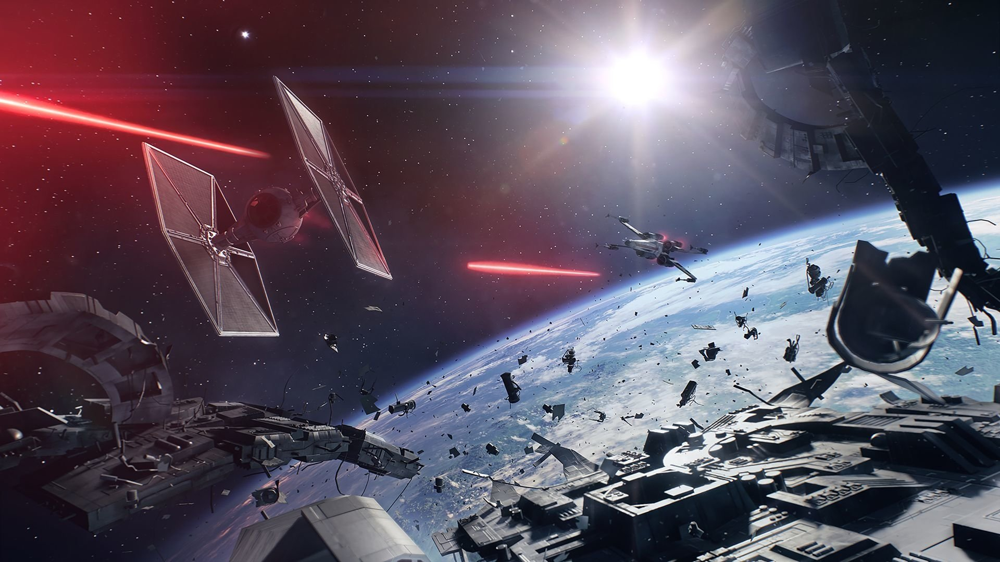

A Força é uma constante nas sagas Star Wars e sujeita a muitas interpretações, sendo descrita por Obi-Wan Kenobi no Ep. IV da seguinte forma: "Um campo de energia criado por todas as coisas vivas. Ele nos envolve e penetra, é o que mantém a galáxia unida."
No universo expandido, Luke Skywalker diz: "A Força é um rio onde muitos podem beber, e o treino do Jedi não é a única taça que a pode conter." Numa clara alusão às diferentes filosofias.
As teorias defendidas pela velha Ordem Jedi são as que nos são apresentadas nas duas trilogias: Ashla (o lado luminoso) versus Bogan (o lado sombrio), com as suas filosofias próprias.
“Não há emoção, há paz.”
“Não há ignorância, há conhecimento.”
“Não há paixão, há serenidade.”
“Não há morte, há a Força.”
“Paz é uma mentira, só existe paixão.”
“Através da paixão, ganho força.”
“Através da força, ganho poder.”
“Através do poder, ganho a vitória.”
“Através da vitória, minhas correntes se rompem.”
“A Força me libertará.”
Apesar de ambas facções procurarem atingir um patamar existencial superior, fazem-no com diferenças filosóficas acentuadas.
Os Jedi defendem o distanciamento emocional, a meditação, devendo as suas ações serem pautadas pela sabedoria e lógica em função do bem comum, sendo a Força usada com sensatez e de forma pacífica. Os Jedi devem fazer um uso da Força que sirva ao conhecimento e para se defenderem, nunca para atacar. Defendem uma atitude menos interventiva, na qual se deve aceitar as situações menos positivas e tentar contorná-las ou resolvê-las de forma a aceitar o fluxo natural do universo e da Força. Os Sith, em contrapartida, acreditam na utilização de emoções fortes para alimentarem as suas habilidades, defendem a sobrevivência do mais apto e o uso sem restrições das suas habilidades. As suas técnicas tendem a ser mais agressivas e destrutivas. Mesmo curar alguém pode ser um ato que se aproxima da filosofia Sith quando tal é feito com o total desrespeito das leis naturais e vergando a Força à vontade do utilizador (como é o caso de Cade Skywalker na 6ª era - Era do Legado). O único ponto em que concordam é no perigo que o amor representa. Para os Jedi, pode levar a sentimentos como ciúme e raiva. Para os Sith, pode levar a sentimentos como compaixão e pena.
Posteriormente, no Ep.I foi introduzido o conceito de "midi-chlorians", como organismos microscópicos, existentes nas células de seres vivos, que facilitam a interação com a Força e podem ser utilizados para contabilizar a sensitividade de cada um. Os que possuírem uma contagem maior de "midi-chlorians", poderão manipular de forma mais eficaz a Força.
Um teste sanguíneo é suficiente para confirmar a quantidade desses seres e dessa forma indicar o nível de sensitividade de alguém. Permitem a percepção da Força da mesma forma que os nossos olhos permitem ver certas frequências luminosas ou os nossos ouvidos interpretar as vibrações do ar como som.
Ao longo do Universo expandido foram surgindo formas artificiais de imbuir alguém ou algo com o poder da Força, quer seja através de cristais artusianos, de artefatos Sith ou das manipulações genéticas dos Rakata. A invenção do conceito de "midi-chlorians" poderá vir a explicar como esses processos funcionam, podendo no entanto entrar em conflito com a existência de seres não orgânicos (Shards e Tsil) sensitivos à Força.
A Força confere aos seus utilizadores uma série de talentos excepcionais, a sua maioria de origem psíquica, tais como telepatia, telecinesia, habilidades precognitivas, mas também melhoria de atributos físicos (velocidade, força e resistência).
Quando canalizada para o meio envolvente em vez de uma pessoa, permite técnicas como descargas eléctricas e estrangulamento (via telecinesia), repetidamente usadas pelos Sith ou habilidades curativas e criação de escudos pelos Jedi de acordo com as filosofias de cada um.
Ao longo dos vários filmes e do Universo Expandido existe uma grande variedade de técnicas diferentes, nas quais a Força permite a criação de resultados bem diferentes dos acima mencionados. Luke Skywalker utilizou-a para conseguir acertar o alvo, no Ep.IV, e destruir assim a 1ª Estrela da Morte, Darth Sidious dominou a técnica que permite transferir o seu espírito para outros corpos, enganando a morte, tal como Qui-Gon Jinn que se tornou um fantasma da Força e transmitiu esse conhecimento a Yoda e Obi-Wan Kenobi, que em seguida a repassou para seu aprendiz Anakin Skywalker.
Na nomenclatura normal dos poderes da Força apenas diz-se o tipo específico do poder na frente e, em seguida, "da Força". Por exemplo: os raios lançados por Dookan contra Yoda e Obi-Wan no Ep. II se chamam Relâmpago da Força; a habilidade de enforcar à distância é Enforcamento da Força, entre outros.
Existem, no entanto, muitas exceções à regra, na maioria dos casos relativos a habilidades conjuntas (maioria), e não poderes de ataque/defesa com de costume. Exemplo disso é a Meditação de Batalha (e não "Meditação de Batalha da Força").
Introduzidos no Ep. IV os sabres de luz, ou "espadas laser", tornaram-se um dos elementos visuais que mais marcaram os filmes e o restante do Universo Expandido.
Inicialmente criados pelos Jedi, rapidamente foram adotados pelos Sith e outros sensitivos, tornando-se na galáxia, sinônimo de algum tipo de ligação com a Força, apesar de poderem ser utilizados por não sensitivos (como o General Grievous). No entanto, a Força é um elemento fundamental na sua construção, visto que é através dela que os vários componentes são fundidos, de forma a garantir o correto fluxo de energia
Os elementos que sobressaem na composição de uma sabre de luz são os cristais que irão contribuir para a cor, e características da lâmina, podendo existir até um máximo de três cristais no sabre de luz normal.
Citando as palavras da Mestre Jedi Luminara Unduli:
“O cristal é o coração da lâmina.”
“O coração é o cristal do Jedi.”
“O Jedi é o cristal da Força.”
“A Força é a lâmina do coração.”
“Todos estão ligados: o cristal, a lâmina, o Jedi.”
“Todos em um.”
FONTE: Star Wars Wiki